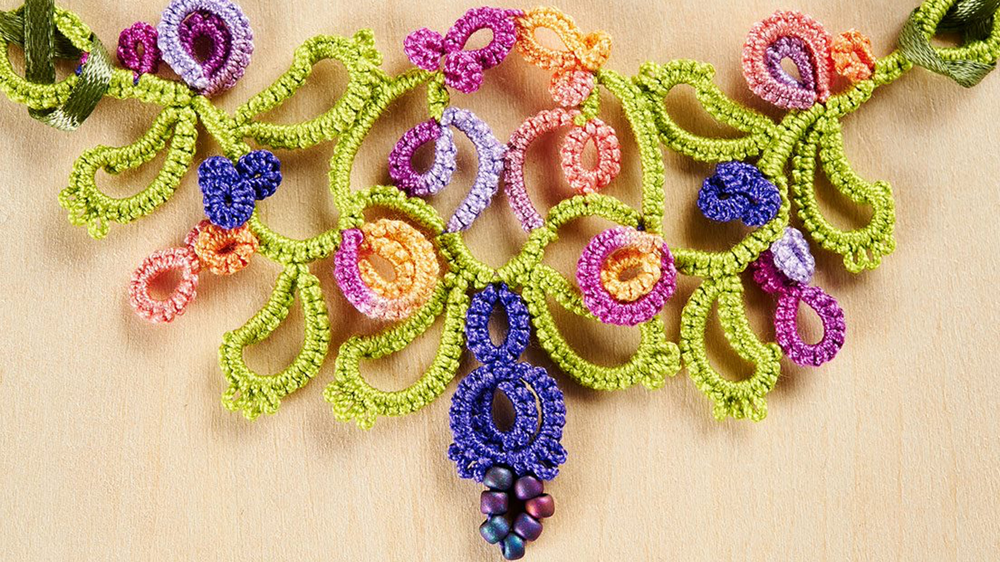

Next Steps in Shuttle Tatting
Shuttle Tatting
Shuttle tatting is a delicate and intricate craft used to create beautiful lacework with knots, loops, and picots. Once you’ve mastered the basics, there are several techniques and patterns to explore that will take your tatting skills to the next level.
Featured Sulky Products:
- Shuttle
- Thread
- Stitch Markers
- Scissors
- Tatting Pattern:
- Needle
- Beads
Step-by-Step For Making a Simple Tatting Design
1.Threading the Shuttle: Begin by cutting a length of tatting thread (typically 4-5 feet long).
Wind the thread onto your shuttle, making sure it is tight but not too bulky. This will allow smooth movement of the thread while you work.
2.Make the First Double Stitch: Hold the shuttle in your right hand and use your left hand to hold the thread. Make a loop with the thread between your hands, known as the "first stitch."
Pull the shuttle through the loop to form a double stitch. This is the fundamental building block of tatting.
3.Continue with Double Stitches: Continue to form double stitches, one after the other. As you add each stitch, the thread wraps around the shuttle, building the lacework.
4.Adding Picots (Optional): To add picots (small loops) to your design, stop after a double stitch and make a loop with the thread. The length of the picot depends on the pattern you're following.
After forming the picot, continue adding more double stitches.
5.Create Rings: A ring is formed by joining several double stitches in a circle. After completing a set of double stitches, use the shuttle to make a half-hitch knot to close the ring, creating a round shape.
You can add picots within the ring as well, depending on your design.
6.Create Chains: A chain is made by adding double stitches consecutively in a straight line. When you're ready to connect rings or other parts of the design, use chains to link them together.
7.Adding Split Rings and Split Chains: Split Rings are used when you want to continue a ring without cutting the thread. Create a small loop with your shuttle thread and continue making the rest of the stitches in the opposite direction.
Split Chains are similar, but instead of making a solid chain, you’ll create one that’s split into two halves to connect various elements.
8.Join the Elements: To join different motifs or sections of your tatting, you’ll use the joining technique. This can be done by joining rings to rings or chains to rings with a join stitch. This helps in creating a continuous piece.
9.Finish the Piece: Once your tatting design is complete, you’ll need to tie off the ends of the thread. Trim any excess thread and use a needle to weave in the ends for a clean finish.
10.Block the Finished Piece (Optional): Blocking helps set the tatting in place and gives it a clean, polished look. Pin your finished tatting to a foam mat or surface in the desired shape, then mist it lightly with water or steam to help the lace relax into its final form.

Share tips, start a discussion, or ask one of our experts or other students a question.